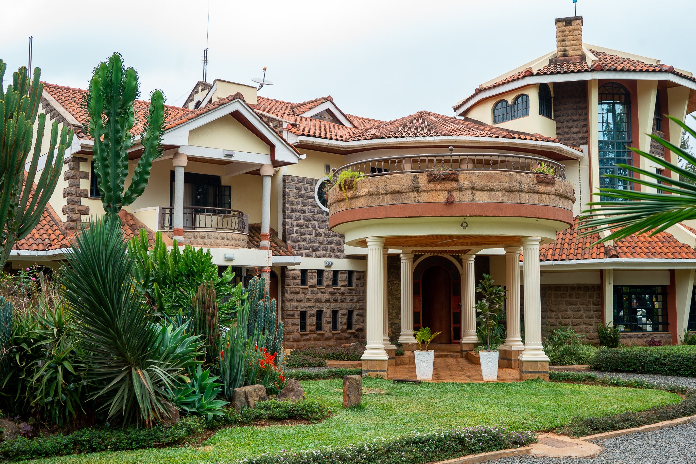

Induction Process
The onboarding at AkiraChix was engaging, starting from the airport
where we received a warm welcome.
From there we were taken to the
hostel, where the alumni gave us a tour of the entire school.
Best Experience in AkiraChix So Far
- Akirachix is beginner friendly in terms of academics, they teach starting from foundation level.
- Diversity and collaborative environment.
- Delicious food.
- Friendly and supportive staff

Areas Of Improvement
Most of the things in AkiraChix are good but not everyhting is good there are some few things which need improvements
Change for better
- No time for sports during the week days
- Blocking youtube cause I get the content better through videos